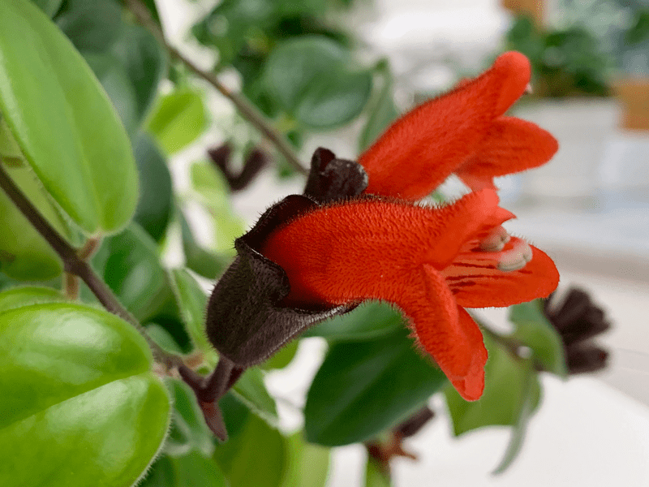
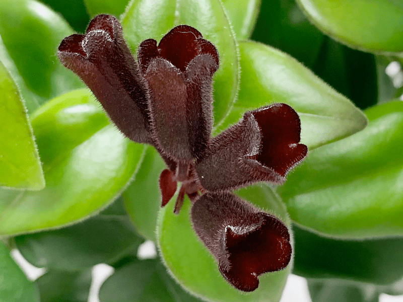
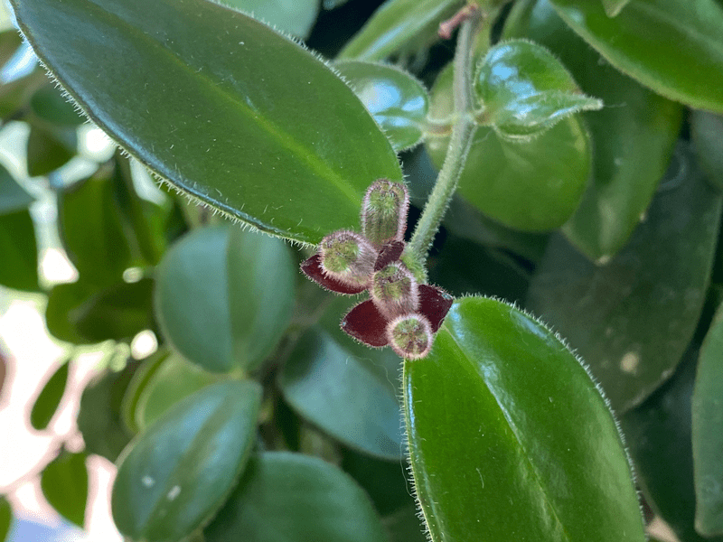
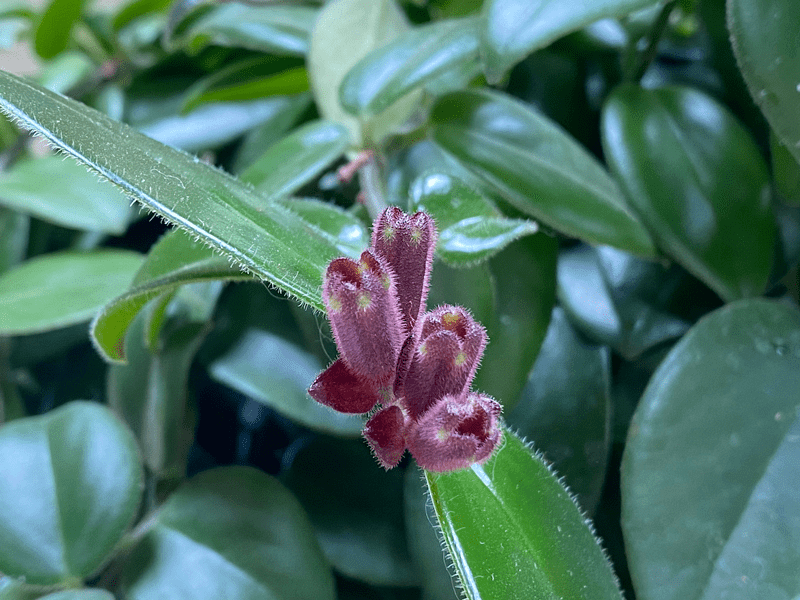

Mona Lisa Lipstick Plant | Pucker Up Baby! | Care Difficulty – Easy
If you have a bright spot in your home and want a graceful, draping plant that blooms off and on all year, lipstick plants are a great choice. The leaves are light and dark green, waxy, and somewhat succulent, which set a beautiful backdrop for the numerous red or orange small, tubular flowers that are reminiscent of miniature tubes of lipstick. The flowers have a pungent fragrance and are attractive to sunbirds and hummingbirds (if outdoors). We have this plant hanging above a small bistro table in our sunroom. Every day when we eat, we have the chance to admire it.

This particular beauty came into my life as a surprise. In Hood River, we have a lovely flower shop called Tammy’s Floral. It’s not uncommon for us to pop in when we drive past . In the back corner of the shop, they have a little jungle seating area where Bob typically hangs out. Well, he tries, and I say tries because no sooner does he sit down than I call him to come to check out a plant. Bless his heart. He is always so patient and kind toward my excitement.
One day while visiting the store I spied this lipstick plant hanging in the front window. I oohed and ahhed as I admired its beauty. Bob encouraged me to get it, but I resisted. It was just too pretty, and I was afraid of caring for it. Sometimes plants just shouldn’t be disturbed… even if for sale.
The next day Bob ran to town to scratch some errands off our to-do list and when he arrived home, he called me into the kitchen. He asked for a hug and during that extended hug, he kept turning us around and around — until I finally spotted the lipstick plant on the counter. I was overwhelmed by his embrace that it took me some time to even notice the plant. I believe that giving is often more of a blessing than receiving, but I have to tell you, on this day, I felt that we were equally blessed. The lipstick plant has now been in our sunroom for a year, and every day we enjoy its character. So here are some of the things I do to care for our plant…
Water Requirements
- Too much, too little… finding the right water requirements can sometimes be a challenge. The lipstick plant is good about giving tell-tale signs to help guide you. If the leaves appear soft and shriveled, give the plant more water. If the green leaves are falling off, it’s a sign of overwatering.
- Personally, I find that it is best to allow the top quarter of soil to dry before watering. In fact, waiting to water until the top portion of soil is dry actually promotes blooming.
Light Requirements
- To promote the best production of blooms, it’s imperative to place the lipstick plant in an indoor location receiving bright indirect light but NOT direct sunlight as it can cause the foliage to burn. Further down in this post I have some troubleshooting suggestions for issues that may be caused by incorrect lighting.
Optimum Temperature
- Lipstick plants like warm temperatures between 75-85 degrees (F). They will tolerate temperatures down to 60 degrees, but the growth slows. If the temperatures drop to 50 degrees or lower, the plant will suffer tissue damage and leaf drop.
Fertilizer – Plant Food
- To get the best blooms, lipstick plants should be fertilized in the spring through summer as part of your regular plant care routine.
- Feed every other week in the spring and summer, and monthly in the fall and winter with a houseplant food high in phosphorous.
- Always dilute the fertilizer to 1/2 the recommended strength.
Soil
I grow mine in a fertile, well-draining, airy soil that is rich in cocopeat. Cocopeat is a multi-purpose growing medium made of coconut husk. The fibrous coconut husk is pre-washed, machine dried, sieved, and made free from sand and other contaminants, such as animal and plant residue.
It is a great alternative to traditional peat moss, which I am not fond of due to its impact on the environment–during harvesting and use it releases carbon dioxide, the major greenhouse gas driving climate change. Peat moss is a fibrous material that consists of decomposed organic materials, usually sphagnum moss, which has been submerged underwater. It takes many years to develop: each inch takes about 15 to 25 years to form.

Plant Characteristics to Watch For
Diagnosing what is going wrong with your plant is going to take a little detective work, but even more patience! First of all, don’t panic and don’t throw a plant out prematurely. Take a few deep breaths and work down the list of possible issues. Below, I am going to share some typical symptoms that can arise. When I start to spot troubling signs on a plant, I take the plant into a room with good lighting, pull out my magnifiers, and begin by thoroughly inspecting the plant.
My plant isn’t producing the lipstick flowers.
- Your plant will not bloom without correct light conditions. Avoid placing this plant in full shade or full sun. The plant needs bright light for a portion of the day, but not all day long. Relocate your plant to fit the prescribed lighting.
- Your pot may be too large. Keeping lipstick plants in small pots helps them produce more flowers.
- Use a diluted fertilizer for a few weeks to give it a boost, which will encourage buds to grow.
The flowers/buds are dropping off.
- Flower-dropping is usually caused by improper watering, either too much or too little. It can also be caused by a sudden change of temperature or change of environment.
- Solution: Double-check your watering schedule and adjust. Summertime and warm environments call for more watering. If your watering is spot-on, check the area for drafts (cool or warm) such as air vents, doors that open outside, fireplaces, etc. Relocate the plant if needed.
The leaves are turning yellowing and dropping.
- If the leaves turn yellow and begin to fall from the plant, it’s a sign that it needs more water, light, or both.
- Solution: Refer to the lighting requirements and double-check the space your plant is living in. If you feel that it is getting adequate light, check the soil to make sure it is getting enough water.
The leaves are turning brown.
- If the leaves or leaf edges become brown, chances are that you have it in a spot that has too much sunlight, or it’s receiving too little water. Solution: Double-check the lighting requirements and make sure that the plant is getting enough water.
- Brown leaves can also be an indication of too much salt in the soil from the fertilizer. Solution: Flush the soil. This may need to be done every 3-4 months. Take the plant to the sink and allow the water to run slowly through the soil for about five minutes, removing the salt buildup. Allow the container to drain thoroughly before returning it to its location.
My plant has black spots and lesions on the foliage and stems.
- These black spots can be a sign of a fungal problem, Botrytis blight (Botrytis cinerea). Conditions worsen when nighttime temperatures are cool and daytime temperatures are warm, and the plant is receiving a high level of moisture. It is worse during the winter months.
- Solution: To help prevent the problem start by reducing the amount of moisture the plant is receiving through either watering or misting for humidity. In severe cases, you can spray the entire plant using a fungicide like copper.
My plant is getting too “leggy.”
- To promote bushier growth, you can prune back the long stems on your lipstick plant, cutting off about a third. This keeps the plant from becoming leggy and looking straggly. It’s best to wait until after the blooming has finished before pruning.

Common Bugs to Watch For
If you want to have healthy house plants, you MUST inspect them regularly. Every time I water a plant, I give it a quick look-over. Bugs/insects feeding on your plants reduces the plant sap and redirects nutrients from leaves. They can quickly get out of hand and spread to your other plants. IF you see ONE bug, trust me, there are more. So, take action right away. Some are brave enough to show their “faces” by hanging out on stems in plan site.
Lipstick plants are not especially popular with pests, but they can fall victim to many of the common houseplant pests, such as thrips, mealy bugs, spider mites, and aphids. You can proactively treat your lipstick plant with neem oil, which is a natural insecticide. You can dilute neem oil according to the directions and spray it on your plant, as well as adding it to the soil when you water the plant. Neem oil can also be used to curb pest infestations, though heavy infestations can often require a toxic insecticide to completely rid your plant of the pests. Click (here) to read how I make my neem oil solution.
- Mealybugs look like small balls of cotton. They travel slooooooowly, but they have a strong will and determination! Though the slow movement, if any plant is touching another, there is a chance the mealybug will hitch a ride on a new leaf and spread. They breed like rabbits of the insect world. Females can deposit around 600 eggs in loose cottony masses, often on the underside of leaves or along stems.
- Aphids are more commonly seen if you place your plants outdoors. Aphids are indeed bugs. They are tiny insects that, along with black, also come in shades of yellow, green, brown, and pink. They are often found on the undersides of leaves.
- Spider mites are more common on houseplants. They are not insects – they are related to spiders. These appear to be tiny black or red moving dots. Spider mites are nearly invisible to the naked eye. You often need a magnifying lens to spot them, or you may just notice a reddish film across the bottom of the leaves, some webbing, or even some leaf damage, which usually results in reddish-brown spots on the leaf.
Toxicity
- Lipstick plants are non-poisonous houseplants, but please don’t eat them!
07/27/20 Update
I transplanted my lipstick plant to one of my all-time favorite pots – The WallyEco pot (you can read about it here). Not long after the transplant, the remaining 4 lipstick flowers fell off (as they normally do). But then I wasn’t seeing any growth and I questioned my transplant. But today, while watering it, I noticed that little buds are forming all over the plant. Shew. I thought I would share a photo of what they look like as they start to form.

08/01/20 Update
I LOVE witnessing the growth of my plants… so I thought you might too, especially if you have or wish to bring a Lipstick plant into your home. Eventually, a red flower will spring forth from these flower bases… I will be patiently waiting.

© AmieSue.com